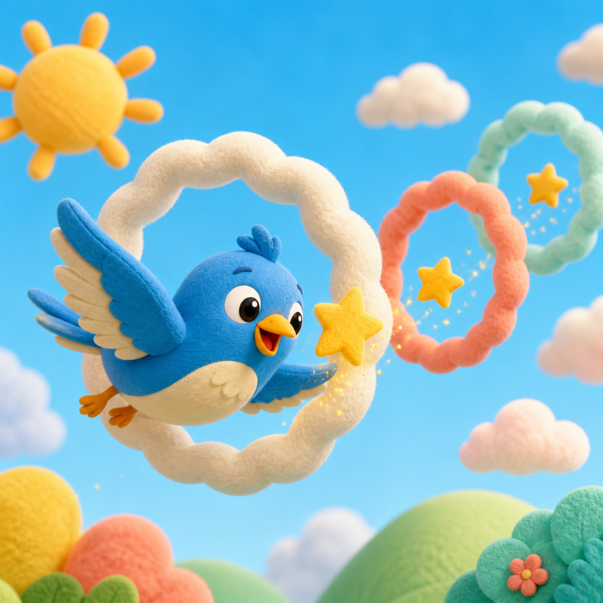

01

СЛОВА
Word Safari
Найди пары и собери свою коллекцию первых английских слов.
★ Учимся с улыбкой
Три короткие игры, чтобы запоминать слова, слушать и говорить. Всего 10 минут в день.
Начать играть →ВЫБЕРИ ИГРУ
Каждая игра занимает 5–10 минут
Найди пары и собери свою коллекцию первых английских слов.

Слушай простые команды и помоги Пипу долететь до звёзд.

Угадывай слова на слух и помогай волшебным цветам расцветать.
МОЙ ПУТЬ
Играй, собирай звёзды и открывай новые достижения.
Первое слово
5 слов
Супер-слух
10 слов
Little Hero
ОТЛИЧНАЯ РАБОТА!
Ты сделал ещё один шаг в английском приключении.